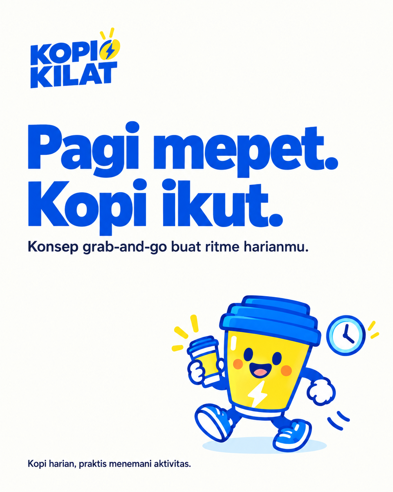
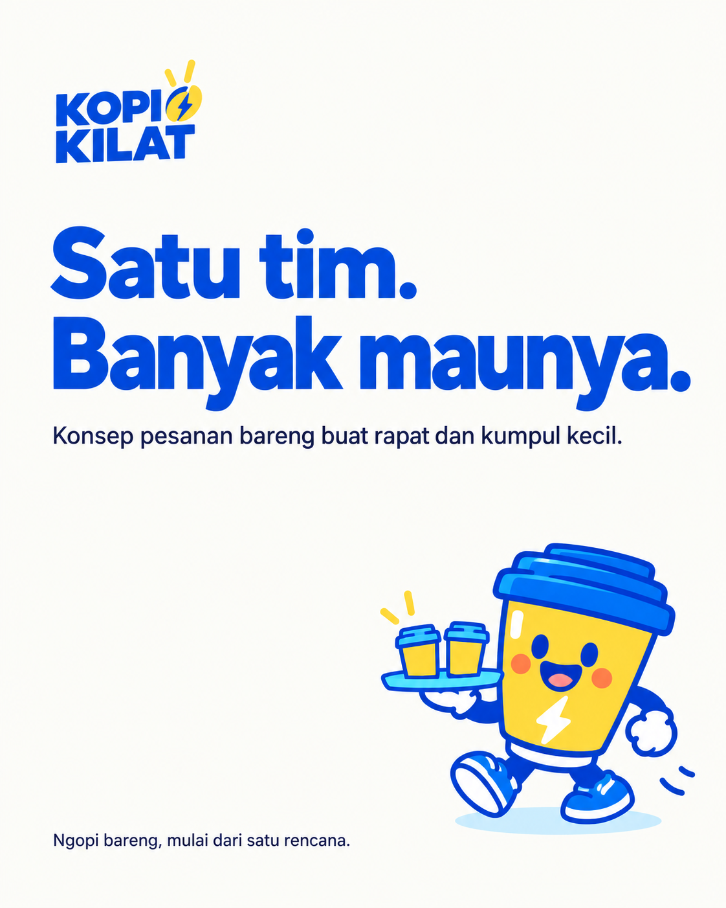

CALON FAVORITILUSTRASI
Kilat Aren
Rp22.000Kopi susu dengan sentuhan gula aren. Pilihan untuk jeda di tengah agenda.
KOPI HARIAN. BUAT RITME KAMU.
Pagi buru-buru, jeda kuliah, sampai rapat berikutnya. Kenalan dengan Kopi Kilat, konsep kopi grab-and-go yang praktis buat hari kamu.

01 / KENALAN DENGAN KAMI
Kopi Kilat adalah konsep kedai kopi dari CV Kopi Kilat, dikembangkan untuk pekerja kantor dan mahasiswa. Kami ingin membuat kopi harian terasa mudah: pilihan yang jelas, harga yang masuk akal, dan rasa yang bisa diandalkan.
Dari satu gelas sebelum kerja sampai pesanan satu tim, kami merancang layanan yang mengikuti kebutuhanmu. Saat ini, menu dan layanan masih dalam tahap persiapan.

03 / SATU TIM, SATU PESANAN
Koordinasi minuman satu per satu bisa makan waktu. Kami menyiapkan konsep pesanan kelompok untuk kantor, kegiatan kampus, dan acara komunitas.
04 / RENCANA CARA PESAN
Kopi, nonkopi, atau paket untuk dinikmati bareng.
Sampaikan pilihan, jumlah, dan waktu yang kamu butuhkan.
Tim kami mengecek ketersediaan dan menyepakati pengambilan. Pengantaran mengikuti jangkauan layanan.
ADA WAKTU BUAT KOPI?
Untuk kopi harianmu, rapat berikutnya,
atau sekadar kenalan dengan Kopi Kilat.